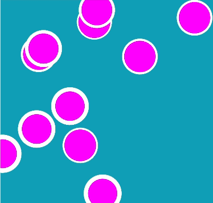
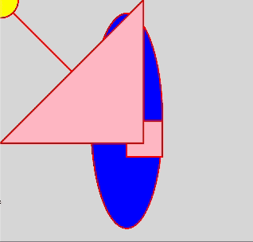
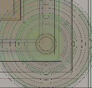

This week, we visited the Yayoi Kusama exhibition. Although it's not my first time attending, I did find my experience much more enjoyable this time around due to the lesser crowd. Suprisingly, my favourite part ended up being the final room where you are able to place a flower anywhere you like. To be able to see the room again towards the end of the exhibition and witness how it had transformed over a few months was kind of touching somehow.
i. 'flower obsession' in december 2024ii. 'flower obsession' in march 2025
Afterwards, we regrouped to go through some p5.js materials, including live coding demonstrations that covered fundamental knowledges and generative art.



I was intrigued by the second exercise and thought that the mouse trail can be utilized to create a Yayoi Kusama inspired p5.js work. I was specifically thinking about the 'flower obsession' obliteration room and how the density of flowers can be recreated digitally. I looked through a few p5.js tutorials and source codes before coming across this one. Using this source code as the foundation, I then tweaked the code to push out flower images by using array logic. The flowers, which were found on hiclipart, are meant to resemble the fabric flowers from the installation.
iii. yayoi inspired p5.js sketch (move mouse over canvas)
I also did a simple 'self-portrait' on p5.js using simple shapes and a mouseMoved() function to shift 'my' facial expression side way. I initially was having some issues with the alignment of the facial features. However, this was easily resolved when I replace the initial fixed values that I was working with for variable values. As a finishing touch, I also randomised the colour of the background as the mouse moves for some y2k festivities.